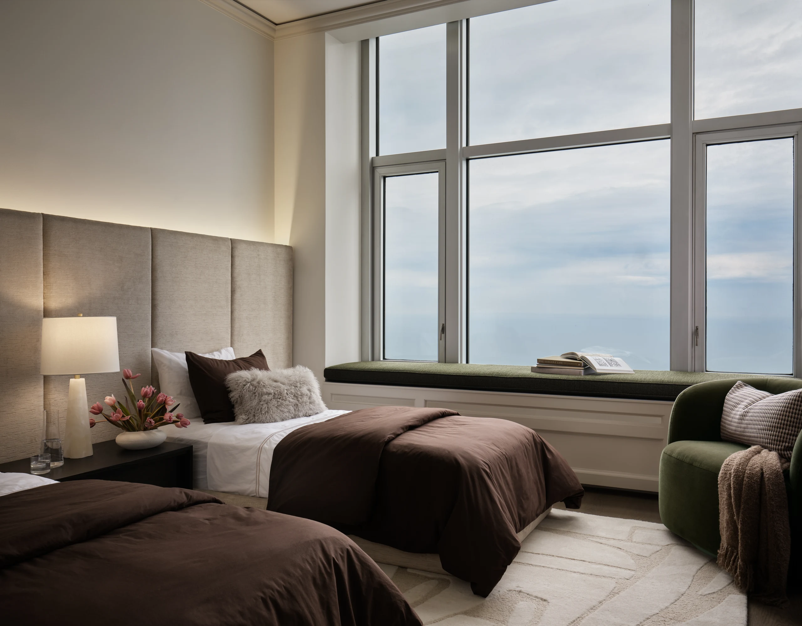
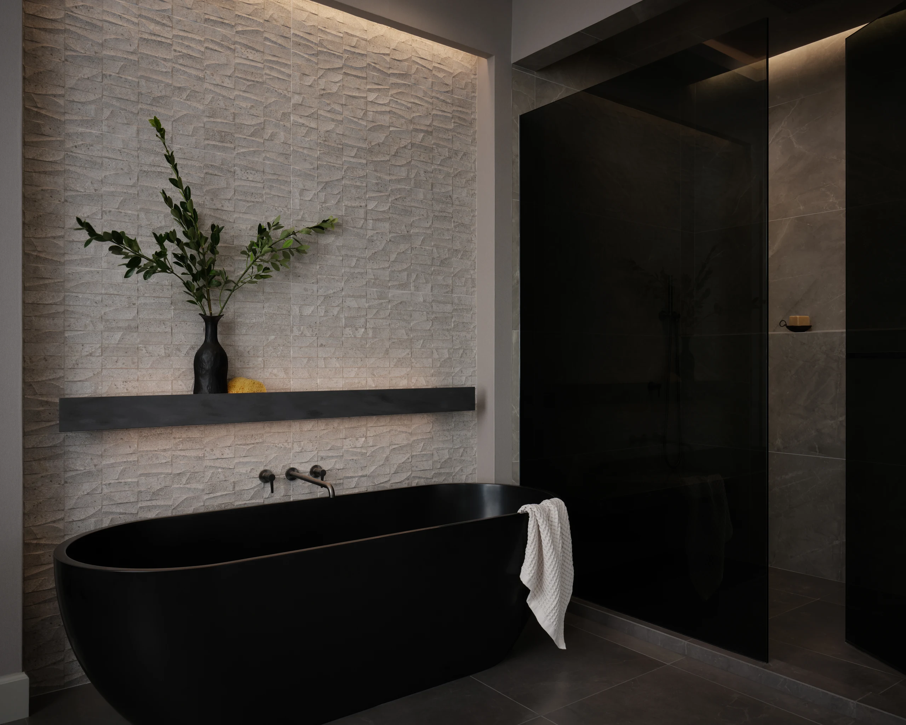
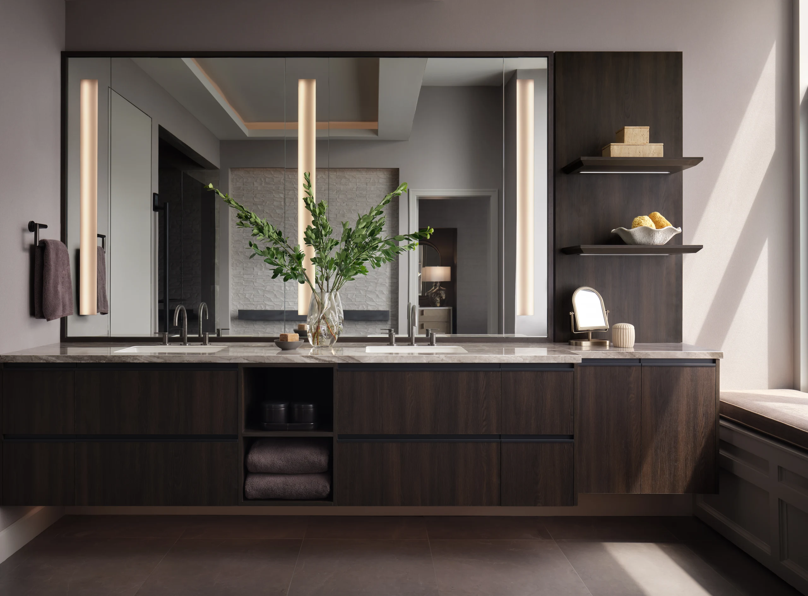

CI Wellness
Better Living,
Designed In
A beautiful home changes what you see
A considered home can change how you feel inside it
CI Wellness integrates architecture, interior design, construction, lighting, technology, materials, and specialized wellness solutions around the way you sleep, recover, breathe, move, and live every day. Not as an addition at the end. As part of the home from the beginning
Wellness Features + Systems
The Right Solutions,
in the Right Home
There is no universal wellness checklist. Every feature should earn its place based on the client, residence, architecture, and lifestyle

Circadian + human-centric lighting
Lighting strategies designed to respond more intelligently to different times of day, activities, and atmospheres
Automated shading + blackout strategies
Window treatments and controls that support privacy, light management, and sleep-supportive bedroom environments
Indoor air-quality strategies
Air purification, filtration, ventilation considerations, and related systems integrated with the broader mechanical design where appropriate
Advanced water filtration
Whole-home or targeted filtration strategies coordinated within the plumbing infrastructure
Hydrotherapy environments
Therapeutic tubs, thoughtfully designed showers, and water-based recovery features integrated into the bathroom architecture
Steam showers
Private steam environments designed into the architecture of the bathroom
Sauna environments
Dedicated or integrated heat-based recovery settings designed around the residence
Cold plunge + contrast environments
Where appropriate, hot-and-cold recovery experiences can be considered within a broader wellness area
Sleep-supportive bedrooms
Lighting, blackout, acoustic control, temperature considerations, material choices, technology, and furniture brought together around rest
Acoustic control
Planning, materials, construction assemblies, and technology selected to create calmer environments and greater privacy where needed
Temperature + humidity management
Environmental controls considered alongside comfort, climate, materials, and the use of individual rooms
Health-conscious material consideration
Material and product selections can be evaluated not only for appearance and durability, but also for how they contribute to the desired indoor environment
Fitness + movement environments
Dedicated areas for training, stretching, yoga, meditation, or other daily practices designed with the same attention as the rest of the residence
Why Wellness Matters to CI
Better Design Should
Support a Better
Quality of Life
Luxury has traditionally been defined by what a home contains. We believe its next chapter is defined just as much by how intelligently the home supports the person living there
LightAirWaterSleepRecoveryAcousticsTemperatureMovementDaily routines
These are not separate from residential design. They are part of how a home performs. By considering them early, wellness can influence planning, infrastructure, lighting, material selections, mechanical systems, bathrooms, bedrooms, technology, and dedicated recovery environments in ways that feel natural rather than added on
This is how CI is redefining luxury: beyond appearance alone and toward the quality of everyday living
What CI Wellness Is
The Home as Part
of Your Wellbeing
We spend a significant part of our lives at home
The environments around us influence daily routines in ways both visible and invisible: the quality and rhythm of light, the air we breathe, the water we use, the acoustics we live with, the temperature we sleep in, and the rituals that help us recover. CI Wellness brings these considerations into residential design. It is not a medical service. And it is not about turning your residence into a clinic, gym, or technology showcase. It is about understanding the ways your home can better support your lifestyle and then designing those opportunities into the architecture with intention
Personalized Around the Way You Want to Live
CI Wellness may be relevant if you are:
01 / 07
Planning a new residence
or significant renovation
02 / 07
Interested in improving
the quality
of your home environment
03 / 07
Thinking more intentionally
about sleep, recovery,
movement, light, air, or water
04 / 07
Creating a residence intended
to support long-term living
05 / 07
Interested in integrating
wellness technologies without
compromising architecture
06 / 07
Building a home spa,
recovery suite,
fitness area, sauna,
steam environment,
or wellness room
07 / 07
Looking for one team to coordinate
design, construction,
products, technologies,
and specialized partners
CI Wellness can be integrated into a broader CI project rather than treated as a separate design language
The Integrated Wellness Process
Expert Perspective.
One Coordinated Team
Wellness is personal. The right solution should begin by understanding the individual, not by starting with a catalogue of products
01
Understand the Client
CI begins with your lifestyle
How you sleep. How you start and end the day. How you exercise. How you recover. How you use your bathroom and bedroom. How much control you want over lighting and technology. What currently supports you. What could work better
These conversations help define where design can have the most meaningful impact
02
Add a Wellness Perspective
Where appropriate, CI collaborates with Dr. Alka to bring an additional wellness perspective to the conversation
Her perspective can help inform a deeper understanding of individual priorities and opportunities as they relate to the client’s desired lifestyle and home environment
This collaboration is intended to inform design thinking, not provide medical treatment through CI
03
Translate Insight Into Design
CI then translates those priorities into the language of the home
Architecture. Lighting. Mechanical planning. Bathrooms. Bedrooms. Materials. Water. Air. Technology. Acoustics. Recovery environments
The goal is to turn an intention such as wanting more restorative sleep or building recovery into a daily routine into tangible design decisions the project team can execute
04
Design + Coordinate the System
Wellness features often touch several disciplines at once
A steam shower affects plumbing, waterproofing, electrical work, controls, ventilation, material selection, and construction detailing
Circadian lighting affects fixture specification, controls, programming, electrical planning, and interior atmosphere
Water filtration affects infrastructure before a fixture is ever selected
CI coordinates these relationships as part of the larger project
05
Build + Integrate
Our team manages specification, design coordination, construction, installation, vendor communication, and integration so wellness systems feel like part of the residence, not equipment added afterward
The client does not have to manage a collection of disconnected contractors, consultants, technology companies, and product specialists
CI remains the central point of coordination

For clients seeking a more comprehensive experience, multiple features can be brought together into a private recovery environment
Wellness Features + Systems
Home Spa + Personalized
Wellness Rooms
For clients seeking a more comprehensive experience, multiple features can be brought together into a private recovery environment
Steam
Sauna
Cold therapy
Hydrotherapy
Meditation
Movement
Rest
Lighting
Sound
The room becomes part of the architecture and part of the routine
Wellness Without Compromising Design
Technology Should
Support the Home.
Not Take It Over
A sophisticated wellness system should not announce itself every time you enter a room
A wellness bathroom should still feel like an extraordinary bathroom
A sleep-focused bedroom should still feel warm, personal, and beautifully considered
A recovery environment should belong to the aesthetic language of the residence
Our role is to coordinate the technology, engineering, construction, and products required while protecting the integrity of the design
Controls can disappear
Technology can integrate
Infrastructure can remain behind the architecture
The result should unmistakably feel like a CI home. Not a clinic. Not a commercial spa. Not a technology showroom
Our Responsibility
One Team Connecting
Wellness to the Rest
of the Home
Wellness infrastructure does not exist independently
It affects the electrical planThe plumbing planMechanical systemsLighting controlsMillworkWaterproofingMaterial selectionsTechnologyArchitecture
That is why CI Wellness sits naturally within our integrated model. The same team responsible for designing the home can coordinate how these systems belong within it. We manage the conversation between disciplines so you do not have to
The Outcome
A Home That Works Harder
for the Life Inside It
That is the idea behind CI Wellness
Beautiful to experience
Intelligent in how it performs
Personalized to how you live
Designed to support a better quality of life
Not wellness for its own sake.
A more considered way of living at home
What If Your
Home
Could Support
More of
What Matters
to You?
Let’s begin with how you want to live,
and design from there